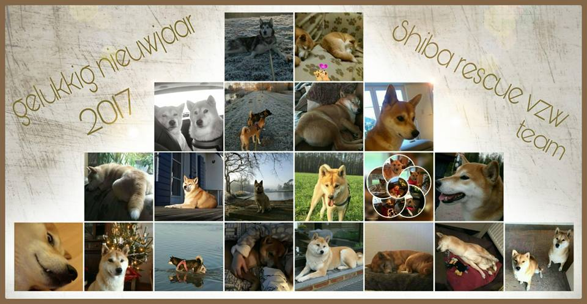

Laatste nieuws pagina 2016
Laatste updates:

27-12-2016 |
Akita Washy staat terug ter adoptie |
31-10-2016 |
Shiba herplaatser Yuki heeft een thuis |
8-10-2016 |
Nieuwe Shiba herplaatser Yuki |
3-09-2016 |
Shiba Zita is een sterretje geworden... alle info bij de "In Memoriam" |
24-08-2016 |
Akita Washy blijft bij zijn eigenaren, hij krijgt zijn persoonlijk paradijs |
16-08-2016 |
Akita Yumi is overleden, wij wensen haar huidige eigenaren veel sterkte |
11-08-2016 |
Nieuwe Shiba herplaatser Zita (adoptie on hold, we wachten op belangrijke info) |
30-07-2016 |
Akita Edward heeft een thuis |
17-07-2016 |
Akita Amy is geplaatst in blijvende opvang, hier later meer over |
10-07-2016 |
Akita Houdini is geplaatst |
25-06-2016 |
Shiba Neko heeft een thuis + Update asiel herplaatsers |
09-06-2016 |
Update asiel herplaatsers |
02-06-2016 |
Update asiel herplaatsers |
25-05-2016 |
Shiba Kyra is geplaatst |
16-05-2016 |
Vijf nieuwe Akita herplaatsers |
15-05-2016 |
Update asiel herplaatsers |
11-05-2016 |
Nieuwe Shiba herplaatser Neko + Update asiel herplaatsers |
30-04-2016 |
Nieuwe Akita herplaatser Gin + Update asiel herplaatsers |
23-04-2016 |
Nieuwe Shiba herplaatser Kyra |
09-04-2016 |
Nieuwe Shiba herplaatser Ninety |
02-04-2016 |
Update pagina: herplaatsers |
27-03-2016 |
Shiba's Kenji en Yume hebben samen een thuis gevonden |
19-03-2016 |
Shiba Kyo is geplaatst + Update pagina: herplaatsers |
03-03-2016 |
Shiba herplaatser Aiko is niet meer beschikbaar via onze vereniging |
27-02-2016 |
Shiba Xena heeft haar thuis gevonden |
19-02-2016 |
Update pagina: herplaatsers |
13-02-2016 |
Nieuwe herplaatser Kyo is al gelijk besproken - Update pagina: herplaatsers |
27-01-2016 |
Nieuwe Shiba herplaatser Xena |
24-01-2016 |
Nieuwe Shiba herplaatser Aiko |
23-01-2016 |
De eerste mini krulstaartenwandeling via Facebook was een succes: groepsfoto |
01-01-2016 |
Dit jaar verwachten wij meerdere verandering. Zowel op de website als daarbuiten |
2015 |
Voor het nieuws van 2015: Klik hier |